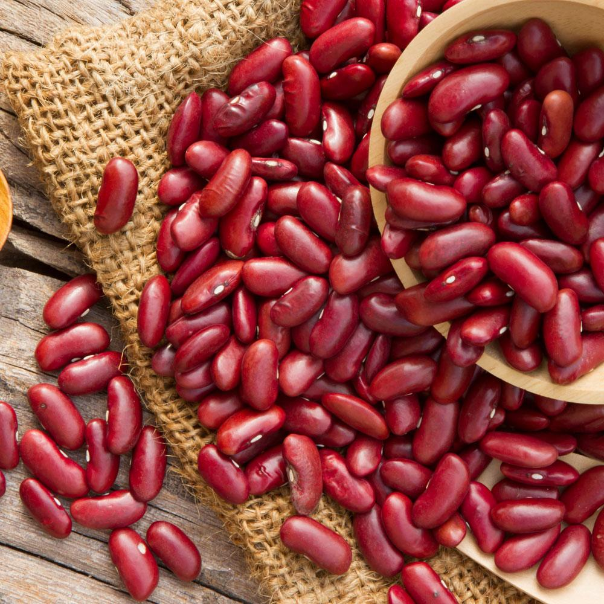
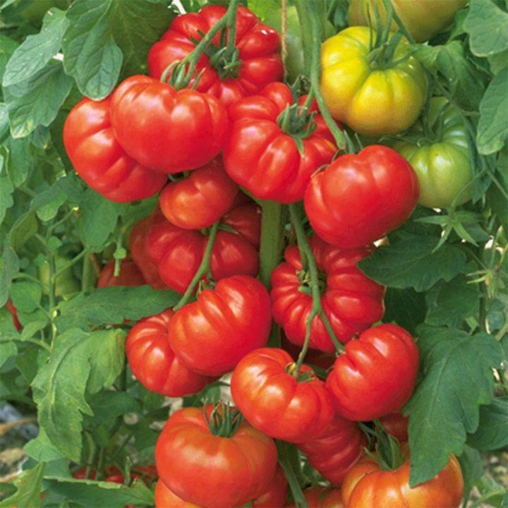

Welcome to Greeny
Growing the Future of Agriculture
Organic Farming Made Simple


Welcome to Greeny
Growing the Future of Agriculture
Organic Farming Made Simple
စိုက်ပျိုးရေးနည်းစနစ်များကိုအောက်တွင်ဖတ်ရူနိုင်ပါသည်
မတ်ပဲစိုက်ပျိုးခြင်း
ဂေါ်ဖီစိုက်ပျိုးခြင်း